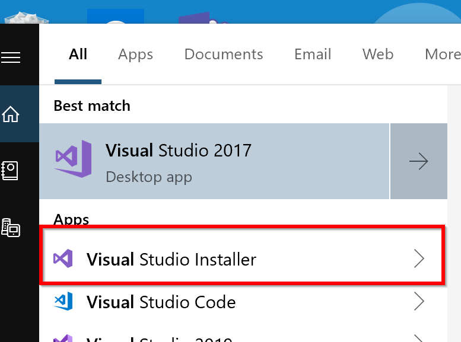
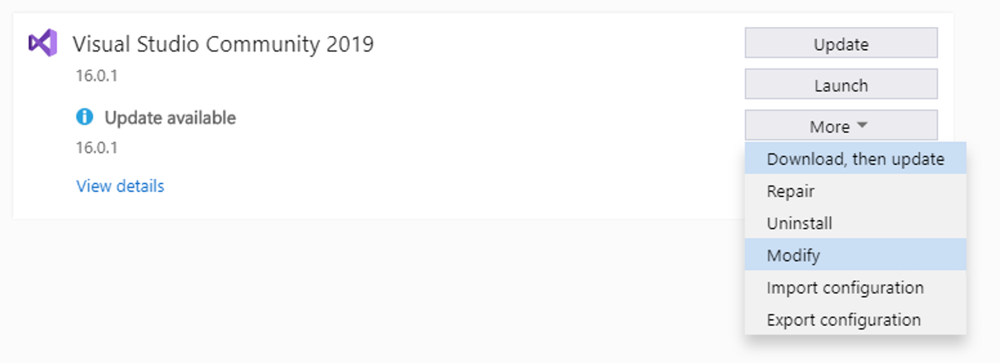
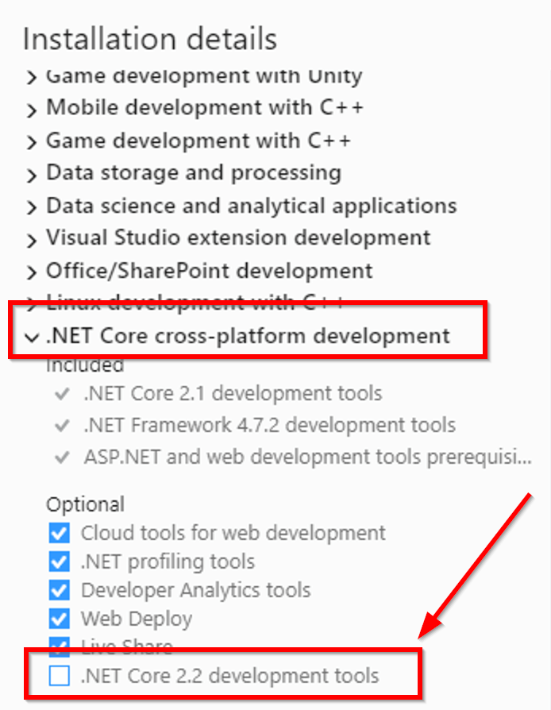
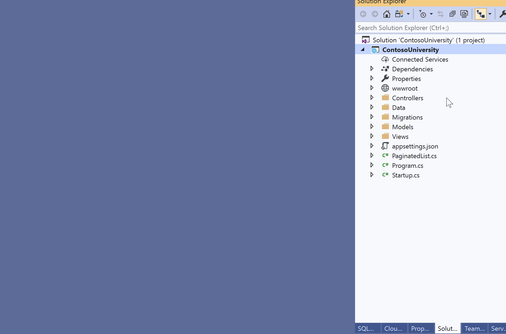
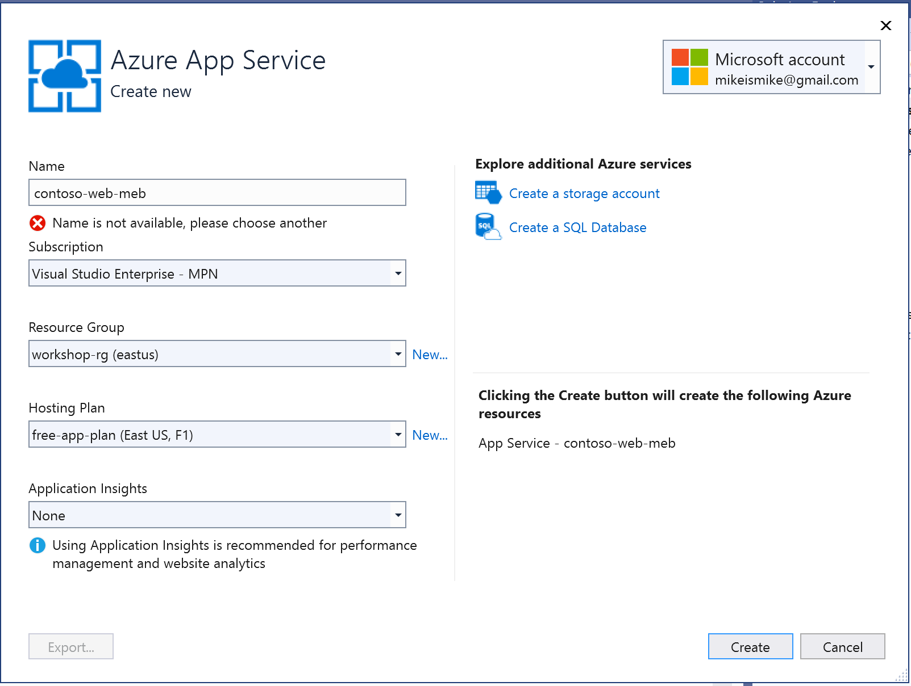
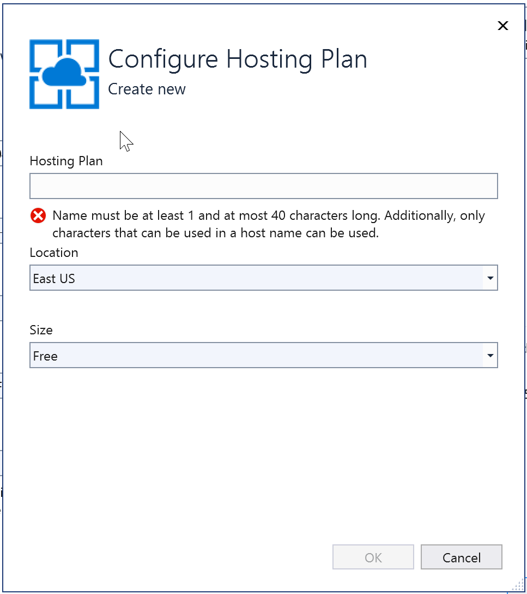
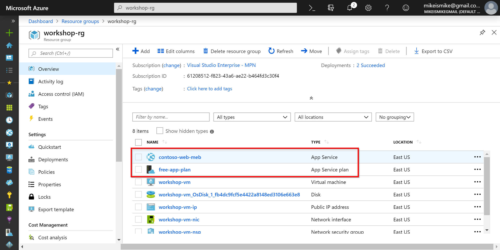

Introduction
Welcome to our Terraform Workshop!
We've been using Terraform to deploy Azure infrastructure for the past year, and have enjoyed the experience so much, we felt we needed to bring it to you.
What is Terraform?
Terraform is an open source tool Hashicorp that allows you to safely and predictably create, change, and improve infrastructure. It codifies APIs into declarative configuration files that can be shared amongst team members, treated as code, edited, reviewed, and versioned.
With Terraform you can:
- Write infrastructure as code
- Plan changes to your infrastructure
- Create reproducible infrastrcuture
Write infrastructure as code
With Terraform, you define infrastructure as code to increase productivity and transparency. Your Terraform can be (and should be) stored in a version control system, shared, and collaborated on by a team. With this approach, you track the incremental changes and historical state of your infrastructure. And, by nature, the codification of the infrastructure is automation friendly, so it can sit inside of a CICD pipeline to dynamically deploy infrastructure, then the code that runs on the infrastructure.
Plan changes to your infrastructure
Terraform provides an elegant user experience for teams to safely and predictably make changes to infrastructure.
Teams can understand how a minor change could have potential cascading effects across an infrastructure before executing that change (through a Terraform process called a plan). Terraform builds a dependency graph from the configurations, and walks this graph to generate plans, refresh state, and more.
Terraform also separates the plan process discussed above from the apply process, which makes the changes to the infrastructure. Separating plans and applies reduces mistakes and uncertainty at scale. Plans show teams what would happen, applies execute changes.
Terraform also have a rich library of infrastructure providers (Azure, AWS, GCP, OpenStack, VMware, Hyper-V, and more), which allow you to make changes across multiple on-premises and cloud environments at the same time.
Create reproducible infrastrcuture
Terraform lets teams easily use the same configurations in multiple places to reduce mistakes and save time. You can use the same configuration files to deploy multiple identical environments. Common Terraform configurations (like SQL/IIS or LEAN/MEAN stack apps) can be packaged as modules and used across teams and organizations.
About the Workshop
#TODO: remove next section when finished
Add more verbiage here.
- VM image (Mike) - DONE
- Windows 10
- Visual Studio 2019
- .NET Core 2.2
- VS Code
- Terraform (in path)
- Chrome pre-installed
- Update the ARM Template to use stored VM image - DONE
- Update ARM Template to include
- Storage Account
Deployed VM & Storage Account from ARM Template
TF (Eric)
- Modular TF using Storage account as backend
- Module for App Service and SQL
- Module for Shared Services - WAF/App Gateway
- parameterization in modules
- RG
- Environment
- High-level Main.tf for dev and prod
Web App (Mike)
- Fabrikam
- .NET Solution
Potential agenda:
Brief Intro/Presentation/About Terraform - MIKE
Chapter 0: Create an Azure Subscription if you need one - MIKE
Chapter 1: Getting started quick - MIKE
- Setup VM
- Subscription ID & Tenant ID
- Create RG view in portal
Chapter 2: - ERIC
- Use new TF code to add:
- RG
- App Service Plan
- App Service
- A side callout/discussion on naming standards
- lowercase, dashes, etc.
- Deploy this (w/o modules to Azure)
- Test that website works (default IIS page)
- Use new TF code to add:
Chatper 3: Modules - ERIC
- Refactor what we just deployed into a module-like process
- Blow away existing RG
- Re-deploy to dev
- Deploy to production
Chapter 4: State management and adding a new module - MIKE
- Discuss State Management, why it's important
- Setup TF Backend and explain chicken/egg scenario
- Deploy, test, view statefile
Chapter 5: Add SQL and Deploy App - MIKE
- Add in SQL Database
- Use VS to deploy the app to App Service
- deploy to dev/prod
- test
Chapter 6: Securing the web app with a WAF/App Gateway - ERIC
- Intro to WAF/App Gateway
- Add WAF module (lot's of stuff)
- Deploy to dev & prod
- Test
Closing remarks
Our speakers include:
-
- Cloud Solution Architect (CSA), KiZAN Technologies
-
- Cloud Solution Architect (CSA), KiZAN Technologies
- Brosteins
Getting Started
To get started you'll need the following pre-requisites. Please take a few moments to ensure everything is installed and configured.
- Microsoft Windows PC or Mac or Linux. Just have a laptop.
- Azure Subscription (Trial is ok, or an Azure account linked to a Visual Studio subscription. See later sections of this chapter to create a free trial account or activate your Visual Studio subscription)
What You're Building
Using Terraform to deploy Azure infrastructure is easy, but there's a lot of different resources you could deploy - Azure is big. Really big. Too big to talk about all things Azure in a single day.
We've assembled an exciting workshop to introduce you to several Azure services that infra and dev teams typically deploy:
In this workshop, you'll learn be learning how to get started with Terraform and provision Azure resources.
In chapter 2, you'll start by writing code to deploy Azure resource groups, an App Service Plan, and an App Service.
Then in chapter 3, you'll learn how to create reusage code modules to create identical dev and prod environments.
Chapter 4 introduces you to Terraform state files, which is how Terraform manages the state of your infrastructure.
In chapter 5, you'll add a SQL database to your infrastructure and deploy a web site.
The workshop wraps up in chapter 6 by deploying an Azure App Gateway and Web Applicaiton Firewall (WAF) to protect the website you deployed previously.
Key concepts and takeaways
- Navigating the Azure portal
- Using Azure Resource Groups to manage multiple Azure services
- Deploying a web app to Azure web app service using Terraform
- Terraform naming conventions and standards
- Why Terraform state files are important and methods for managing state
- Deploying Azure SQL databases and apps from Visual Studio
- How Azure App Gateways and WAFs work, and how to deploy with Terraform
Materials
You can find additional lab materials and presentation content at the locations below:
- Presentation: https://github.com/mikebranstein/terraform-workshop
- Source code for the code used in this guide: https://github.com/mikebranstein/terraform-workshop
- This guide: https://github.com/mikebranstein/terraform-workshop-instructions
Creating a Trial Azure Subscription
If you already have an Azure account
If you have an Azure account already, you can skip this section. If you have a Visual Studio subscription (formerly known as an MSDN account), you get free Azure dollars every month. Check out the next section for activating these benefits.
There are several ways to get an Azure subscription, such as the free trial subscription, the pay-as-you-go subscription, which has no minimums or commitments and you can cancel any time; Enterprise agreement subscriptions, or you can buy one from a Microsoft retailer. In exercise, you'll create a free trial subscription.
Exercise: Create a Free Trial Subscription
Browse to the following page http://azure.microsoft.com/en-us/pricing/free-trial/ to obtain a free trial account.
Click Start free.
Enter the credentials for the Microsoft account that you want to use. You will be redirected to the Sign up page.
Note
Some of the following sections could be omitted in the Sign up process, if you recently verified your Microsoft account.
If you already ahve an Azure subscription tied to your Microsoft account, you may see a screen like this:

You're wekcome you use your existing subscription for the bootcamp. If you're planningto use your existing subscription, you can skip this exercise. Click Sign Up to create a new subscription.
Complete step 1 by entering your mobile phone number.

Select Text me or Call me to verify that you are a real person. Typein the verification code you receive on the phone or via text.
Next, complete the Payment information section.
A Note about your Credit Card
Your credit card will not be billed, unless you remove the spending limits. If you run out of credit, your services will be shut down unless you choose to be billed.

Press Next after completing the credit card section.
In the Technical Support section, select the last option (No technical support) and click Next.

In the Agreement section, check the I agree to the subscription Agreement, offer details, and privacy statement option, and click Sign up.
Your free subscription will be set up, and after a while, you can start using it. Notice that you will be informed when the subscription expires.

Your free trial will expire in 29 days from it's creation.
Activating Visual Studio Subscription Benefits
If you happen to be a Visual Studio subscriber (formerly known as MSDN) you can activate your Azure Visual Studio subscription benefits. It is no charge, you can use your MSDN software in the cloud, and most importantly you get up to $150 in Azure credits every month. You can also get 33% discount in Virtual Machines and much more.
Exercise: Activate Visual Studio Subscription Benefits
To active the Visual Studio subscription benefits, browse to the following URL: http://azure.microsoft.com/en-us/pricing/member-offers/msdn-benefits-details/
Scroll down to see the full list of benefits you will get for being a MSDN member. There is even a FAQ section you can read.
Click Activate your monthly Azure credit to activate the benefits.

You will need to enter your Microsoft account credentials to verify the subscription and complete the activation steps.
Preparing your Azure environment
You might be wondering how you can participate in a cloud workshop and not need any software installed.
Thanks to the Azure Resource Manager and some nifty templates I put together, we're going to provision a virtual machine (VM) with Visual Studio (and all the tools you'll need) installed in your Azure subscription. From that point forward, you can work from the VM.
It takes about 15 minutes to get the VM deployed to your subscription, so let's get started!
Exercise: Provisioning a Visual Studio Community VM in your Azure Subscription
First, we'll createa storage account and copy a Windows VM image into the storage account.
In the Azure portal, click the Cloud Shell link at the top:

If you've never opened a Cloud Shell, you may encounter a message like this:

If you see that message, select your Azure subscription and click Create Storage. Wait until you see a Cloud Shell (Bash) appear:

Using the Bash Cloud Shell, run various Azure CLI commands.
Create a resource group named workshop-vm-rg:
az group create --location eastus --name workshop-vm-rg
Create a storage account in the resource group. Be sure to replace
az storage account create --name <storage-account-name> --resource-group workshop-vm-rg --location eastus
Create a container in your storage account to hold VHDs:
az storage container create --account-name <storage-account-name> --name vhds
Start copying the virtual machine image from my storage account to yours.
az storage blob copy start --account-name <storage-account-name> --destination-blob terraform-win10-vs2019-v2.vhd --destination-container vhds --source-uri https://workshopvhds.blob.core.windows.net/vhds/terraform-win10-vs2019-v2.vhd
This will begin the copying process, but the copy may take 5-10 mintues. Use this command to check the status of the copy:
az storage blob show --account-name <storage-account-name> --name terraform-win10-vs2019-v2.vhd --container-name vhds --query "properties.copy"
When you run this command, you'll see various status messages showing you the copy progress. Wait for the completionTime and progress status to show a completion. In the image below, you can see my copy has not yet completed, and the progress is 141942784/136365212160, or ~0.1%.

Now that the copy has finished, get the URI of your virtual machine disk image. For example, it's https://storage-account-name}.blob.core.windows.net/vhds/terraform-win10-vs2019-v2.vhd. Keep this URI handy.
Deploying the Virtual Machine
Start by clicking the Deploy to Azure button below.

This opens the Azure portal in a new tab of your browser. If you're prompted to sign in, do so.
When the page loads, you'll see this custom deployment page:

Under Basics, select/enter the following
- Subscription: your Azure subscription
- Resource group: Create new
- Resource group name: workshop-rg, or some other name that's easy to remember
- Location: East US
- Os Blob Uri: the URI of the virtual machine image you just finished copying
Resource Groups
Formally, resource groups provide a way to monitor, control access, provision and manage billing for collections of assets that are required to run an application, or used by a client or company department. Informally, think of resource groups like a file system folder, but instead of holding files and other folders, resource groups hold azure objects like storage accounts, web apps, functions, etc.
Naming Resource Groups
I like to name my resource groups after their purpose, and append them with -rg, which signifies they are a resource group.
Under Settings, enter
- Virtual Machine Name: workshop-vm, or some other name that is less than 15 characters long, and no special characters
- Admin Username: your first name, or some other username without spaces
- Admin Password: P@ssW0rd1234, or another 12-character password with upper, lower, numbers, and a special character
- Os Blob URI: https://{storage-account-name}.blob.core.windows.net/vhds/terraform-win10-vs2019-v2.vhd
WARNING
Do not forget your username and password. Write it down for today.
Approving the "Purchase"
Scroll down to the bottom of the page and click I agree to the terms and conditions stated above.
Press the Purchase button.
Deploying the VM
After a few moments, the deployment of your VM will begin, and you'll see a status notification in the upper right:

...and a deployment tile on your dashboard:

Now, wait for about 10 minutes and your virtual machine will be deployed and ready to use.
That's it for the pre-requisites for today's workshop. Wait until your VM is created, and we'll be getting started soon!
Getting started in Azure
Pre-requisites
Before we go any further, be sure you have all the pre-requisites downloaded and installed. You'll need the following:
- Microsoft Windows PC or Mac
- Evergreen web browser (Edge, Chrome, Firefox)
- Azure Subscription (trial is ok, and you should have already done this in the chapter 0)
- A Visual Studio Community edition VM running in Azure (see chapter 0 for setting this up)
NOTE
If you've been following along, you should have all of these above items.
Organizing your resources in the Azure portal
One of the most important aspects of your Azure subscription and using the Azure portal is organization. You can create a lot of Azure resources very quickly in the portal, and it can become cluttered quickly. So, it's important to start your Azure subscription off right.
Our first stop will be to create a new Dashboard to organize our Azure resources we're building today.
Exercise: Create a Dashboard
Creating a Dashboard
We'll start by creating a dashboard.
Login to the Azure portal, click +, give the dashboard name, and click Done customizing.

That was easy! Dashboards are a quick way of organizing your Azure services. We like to create one for the workshop because it helps keep everything organized. You'll have a single place to go to find everything you build today.
Pinning a Resource Group to the Dashboard
Now that you have a new dashboard, let's put something on it. We'll be searching for the resource group you created in chapter 0 (the one that is holding your VM), and pinning it to this dashboard.
Resource Groups
You'll recall from the last chapter that resource groups provide a way to monitor, control access, provision and manage billing for collections of assets that are required to run an application, or used by a client or company department. Informally, think of resource groups like a file system folder, but instead of holding files and other folders, resource groups hold azure objects like storage accounts, web apps, functions, etc.
Start by searching for the resource group you created in chapter 0. My resource group was called workshop-rg.

Click in the search bar at the top. If you're lucky your resource group will be at the very top (like mine was). If not, type it's name and click on it.
This opens the resource group. Next, click the pin icon at the upper-right to pin the resource group to your dashboard:

Finally, close the resource group, by clicking the X in the upper right corner (next to the pin icon). You should see the resource group pinned to your dashboard:

Now that you have the VM's resource group pinned to your dashboard, it will be easy to locate the VM in later exercises.
Go ahead and click ont he Virtual machine, then pin it to the dashboard. When you're finished, you should see something like this:

That wraps up the basics of creating dashboard, creating resource groups, and pinning resources to a dashboard. We're not going to take a deep dive into Azure Resource Group. If you're interested in learning more, check out this article.
Logging into your virtual machine
Next, let's get logged into the VM that we created in chapter 0.
Exercise: Logging into your VM
Start by navigating to your Azure portal dashboard.
Locate the VM resource group you pinned earlier in this chapter and click on your virtual machine:

Click the Connect button.

This displays a download window on the right. Press the Download RDP file button.

This downloads a file to your computer that will open in your Remote Desktop program.

Click the downloaded file to open a connection to your VM. Enter your username and password you created earlier.

Click OK to connect.
If you're prompted by a security message, respond Yes:

You're now connected to your VM.
Download additional software
If you're like me, you have a standard toolset you like to use. Please, download software for your VM and don't forget your browser of choice, Notepad++, Visual Studio Code, etc.
This concludes the exercise.
Now that you're connected to your VM, you can continue to workshop from inside the VM.
Running a VM in Azure
If you're worried about excessive charges to your Azure subscription because you're running a VM constantly, don't worry. This VM is programmed to shut itself down every evening at 7:00 PM EST.
Clone project from master branch
Let's get started by getting the master branch.
Exercise: Getting the bootcamp files
Clone or download the master branch from https://github.com/mikebranstein/global-azure-bootcamp-2019.
Use this link to download a zip file of the master branch.

Unblock the .zip file!
Don't open the zip file yet. You may need to unblock it first!
If you're running Windows, right-click the zip file and go to the properties option. Check the Unblock option, press Apply, press Ok.

Now it's safe to unzip the file.
About Contoso University
The Contoso University web app is a small app that is used to manage the faculty, students, courses, and grades of Contoso University. It's not very advanced, but comes with pre-seeded data, and is ideal to demonstrate the concepts of this workshop.
Verify the site works
Exercise: Compiling the solution
Before we can compile the solution, we need ot ensure .NET Core 2.2 is installed on your virtual machine.
Locate and run Visual Studio Installer from the Start Menu:

Select the Modify option under Visual Studio 2019:

On the right, expand the section labeled .NET Core cross-platform development, and check the box labeled .NET Core 2.2 development tools.

Click the Modify button on the bottom to install. The install takes approx. 5 minutes to complete.
When the install is finished, you can update Visual Studio 2019 to the latest version (if you want), but it isn't necessary.
Next, open the solution in Visual Studio 2019 by double-clicking the ContosoUniversity.sln file in the src folder of the extracted files:

Logging into Visual Studio the first time
When you open Visual Studio the first time, it may take a few minutes. Be patient. You'll probably be prompted to sign in. Use your Microsoft account to sign in (the same one you used to sign up for the Azure trial).
The opened solution should look like this:

Build and debug the solution. You should see the Speech Recognition site load in your browser.

This concludes the exercise.
That's it! You're up and running and ready to move on! In the next section, you'll learn how to deploy your website to Azure.
Understanding App Service and Web Apps
In the last part of this chapter, you'll learn how to create an Azure Web App and deploy the Speech Service website to the cloud. In short, I like to think of Azure Web Apps like IIS in the cloud, but without the pomp and circumstance of setting up and configuring IIS.
Web Apps are also part of a larger Azure service called the App Service, which is focused on helping you to build highly-scalable cloud apps focused on the web (via Web Apps), mobile (via Mobile Apps), APIs (via API Apps), and automated business processes (via Logic Apps).
We don't have time to fully explore all of the components of the Azure App Service, so if you're interested, you can read more online.
What is an Azure Web App?
As we've mentioned, Web Apps are like IIS in the cloud, but calling it that seems a bit unfair because there's quite a bit more to Web Apps:
Websites and Web Apps: Web Apps let developers rapidly build, deploy, and manage powerful websites and web apps. Build standards-based web apps and APIs using .NET, Node.js, PHP, Python, and Java. Deliver both web and mobile apps for employees or customers using a single back end. Securely deliver APIs that enable additional apps and devices.
Familiar and fast: Use your existing skills to code in your favorite language and IDE to build APIs and apps faster than ever. Access a rich gallery of pre-built APIs that make connecting to cloud services like Office 365 and Salesforce.com easy. Use templates to automate common workflows and accelerate your development. Experience unparalleled developer productivity with continuous integration using Visual Studio Team Services, GitHub, and live-site debugging.
Enterprise grade: App Service is designed for building and hosting secure mission-critical applications. Build Azure Active Directory-integrated business apps that connect securely to on-premises resources, and then host them on a secure cloud platform that's compliant with ISO information security standard, SOC2 accounting standards, and PCI security standards. Automatically back up and restore your apps, all while enjoying enterprise-level SLAs.
Build on Linux or bring your own Linux container image: Azure App Service provides default containers for versions of Node.js and PHP that make it easy to quickly get up and running on the service. With our new container support, developers can create a customized container based on the defaults. For example, developers could create a container with specific builds of Node.js and PHP that differ from the default versions provided by the service. This enables developers to use new or experimental framework versions that are not available in the default containers.
Global scale: App Service provides availability and automatic scale on a global datacenter infrastructure. Easily scale applications up or down on demand, and get high availability within and across different geographical regions. Replicating data and hosting services in multiple locations is quick and easy, making expansion into new regions and geographies as simple as a mouse click.
Optimized for DevOps: Focus on rapidly improving your apps without ever worrying about infrastructure. Deploy app updates with built-in staging, roll-back, testing-in-production, and performance testing capabilities. Achieve high availability with geo-distributed deployments. Monitor all aspects of your apps in real-time and historically with detailed operational logs. Never worry about maintaining or patching your infrastructure again.
Deploying to a Web App from Visual Studio
Now that you understand the basics of web apps, let's create one and deploy our app to the cloud!
Earlier in this chapter, you created a resource group to house resources for this workshop. You did this via the Azure Portal. You can also create Web Apps via the Azure portal in the same manner. But, I'm going to show you another way of creating a Web App: from Visual Studio.
Exercise: Deploying to a Web App from Visual Studio 2017
Visual Studio 2019 Warning
This exercise assumes you're running Visual Studio 2019. If you're not, please do.
From Visual Studio, right-click the ContosoUniversity project and select Publish. In the web publish window, select Microsoft Azure App Service, Create New, and press Publish. This short clip walks you through the process:

On the next page, give your Web App a name, select your Azure subscription, and select the Resource Group you created earlier (mine was named workshop-rg), and create a new Free App Service Plan. Read below for more details.
Unique Web App Names
Because a web app's name is used as part of it's URL in Azure, you need to ensure it's name is unique. Luckily, Visual Studio will check to ensure your web app name is unique before it attempts to create it. In other words, don't try to use the web app name you see below, because I already used it.

Click New... to create a new Web App plan.
Web App Plans
Web App plans describe the performance needs of a web app. Plans range from free (where multiple web apps run on shared hardware) to not-so-free, where you have dedicated hardware, lots of processing power, RAM, and SSDs. To learn more about the various plans, check out this article.
Create a new free plan.

After the plan is created, click Create to create the Web App in Azure.
When the Azure Web App is created in Azure, Visual Studio will publish the app to the Web App. After the publish has finished, your browser window will launch, showing you your deployed website.
Web App URLs
The deployed web app has a URL of Web App Name.azurewebsites.net. Remember this URL, because you'll be using it in later chapters.
One final note is to check the Azure Portal to see the App Service plan and Web App deployed to your resource group:

This concludes the exercise.
Example Chapter 2
This is an update